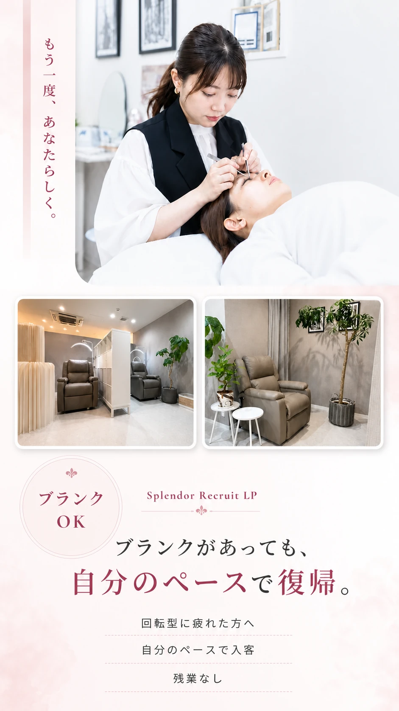

- ブランクに合わせて感覚を取り戻せる
- 丁寧なカウンセリングを大切にできる
- 回転数だけに追われない働き方
- 残業なし、有給休暇も使いやすい

回転型に戻る自信がない方へ
自分のペースで、もう一度始めませんか？
「久しぶりで手が慣れるかな」「また忙しすぎるサロンは怖いな」そんな気持ちのままで大丈夫です。まずは見に来てください。
Salon
数をこなすより、
ちゃんと向き合いたい。

Splendorは、熊本市中央区水前寺にあるアイラッシュサロンです。 30代から40代の大人女性を中心に、 「自分に似合うデザインを提案してほしい」 「毎月安心して通える担当者にお願いしたい」 そんな想いを持ったお客様が来てくださっています。
前にアイリストとして働いていたけれど、回転型のスピード感に戻るのはちょっと怖い。 そんな方にこそ、Splendorを知ってほしいです。 カウンセリングを流れ作業にせず、一人ひとりのお客様に向き合う働き方を大切にしています。
Message
ブランクがあっても、
あなたの経験は
なくなりません。

ブランクがあると、「今の技術についていけるかな」「また忙しいサロンで働けるかな」って不安になりますよね。 でも、これまでお客様と向き合ってきた経験は、ちゃんとあなたの中に残っています。
Splendorでは、いきなり回転数を追わせることはしません。 今の感覚を確認しながら、もう一度アイリストとして働く気持ちを、自分のペースで戻していきましょう。
Splendor 代表
白木 結椛
Reasons
復帰が不安な方に、
Splendorが合う理由。

01
回転数だけを追いません
短時間で次々こなす働き方に疲れた方へ。Splendorでは、お客様の悩みを聞いて、その方に合うデザインを考える時間を大切にしています。
02
不安なところから確認できます
久しぶりで不安な技術や手順は、一つずつ確認しましょう。無理に背伸びしなくて大丈夫です。

03
落ち着いたお客様と向き合えます
大人女性のお客様が中心です。毎月楽しみに来てくださる方と、長く関係を作っていけるのは嬉しいですよ。
04
少人数で、落ち着いて働けます
大人数のにぎやかさや人間関係に疲れた方にも合いやすいと思います。必要な連携はしながら、自分の仕事に集中できます。

05
ちゃんと休めるから続けやすい
週休2日、残業なし。希望休や有給休暇も相談しやすいので、余裕を持って復帰しやすいです。
Staff Voice
実際に働くスタッフの声。

技術が習得できるか不安でした。
まつ毛の技術をちゃんと覚えられるのかな…。研修がどんな雰囲気なのかも、正直すごく気になっていました。
お客様に施術する時の気持ちや、自信がつきました。
技術をその都度教えてもらえるので、「できた！」と思える瞬間が増えていきました。お客様に入る時の気持ちも変わりました。
一人ひとりのお客様に向き合えると思ったから。
以前は回転数を重視するサロンにいたため、施術数や働き方、休日数なども含めて安心して働ける環境に惹かれました。
新規のお客様へのカウンセリングがとても丁寧です。
「見て覚えて」だけで放置されることはありません。その都度指導してもらえるので、不安を残したまま進む感じがなかったです。
遠くから来てくださるお客様がいること。
来店を楽しみに足を運んでくださるお客様がいて、この仕事のやりがいを感じます。
美容の知識が深く、その都度対応してくださる方です。
気づいたことや直した方がいいこと、なぜそうなるのかまで教えてくださるので、お客様への対応や寄り添い方も成長できました。
Salary
復帰後の働き方が
イメージできます。
月給20万円をベースに、売上歩合や店販売上バックで収入アップも目指せます。 ブランク明けでも、今の技術や経験に合わせて、無理なく感覚を戻していきましょう。
時期
売上目安
給与目安
研修中
デビュー準備
時給1,050円
デビュー後
1〜3か月 売上50〜60万円 月給20〜22万円
1〜3か月 売上50〜60万円 月給20〜22万円
入社後
6か月前後 売上70〜80万円 月給24〜26万円
6か月前後 売上70〜80万円 月給24〜26万円
入社後
1年前後 売上90〜100万円 月給28〜30万円
1年前後 売上90〜100万円 月給28〜30万円
※上記は目安です。実際の給与は出勤日数、売上、店販売上、歩合条件により変動します。
Requirements
ブランク・経験者向けの募集要項。
募集職種アイリスト、ブローリスト
雇用形態正社員
応募資格美容師免許必須、アイリスト経験者・ブランク歓迎
勤務地熊本県熊本市中央区水前寺2丁目17-10
営業時間9:30〜18:00
勤務時間9:15〜18:15
休憩60分
休日週休2日 / 定休日なし
希望休土日休みは月2回まで可能
長期休暇年末年始、GW、お盆休みあり
給与月給20万円〜
研修期間中時給1,050円
試用期間1か月。テスト合格後デビュー
歩合売上歩合あり、店販売上バックあり
月収例入社1年：月収30万円
残業なし
採用予定人数1名
応募方法LINE、電話、Instagram DM
サロン見学応募前の見学のみも可能
自分のペースで戻れる環境
社会保険完備
厚生年金
雇用保険
労災保険
交通費支給
駐車場あり
制服支給
社員割引
健康診断
セミナー代補助
有給休暇
時短社員制度あり

アイリストの仕事は好き。でも、また忙しすぎる環境に戻るのは不安。 その気持ち、すごく自然です。技術の確認も、入客ペースも、休み方も一緒に整えていきましょう。
Flow
採用までの流れ。
-
Step 01
LINE・電話・Instagram DMから連絡
「ブランクがあります」「回転型は不安です」そんな相談だけでも大丈夫です。まずは気になることを聞いてください。
-
Step 02
見学・面談
施術ペースやスタッフ同士の距離感を、実際に見てもらえます。無理に応募をすすめることはありません。
-
Step 03
面接
これまでの経験、ブランクの長さ、不安な技術、これからどう働きたいかを聞かせてください。
-
Step 04
採用・研修スタート
経験やブランクに合わせて、必要な確認からスタートします。あなたのペースで感覚を戻していきましょう。
FAQ
応募前に多いご質問。
未経験でも応募できますか？
はい。まつ毛に触ったことがない、そんなあなたでも大丈夫です。美容師免許をお持ちであれば、白木代表がそばで一緒に覚えていきます。
ブランクが長くても大丈夫ですか？
大丈夫です。「久しぶりで不安…」という方ほど、最初にちゃんと話してください。あなたの状態に合わせて確認します。
回転型のように数を追われますか？
数字だけで追い込むことはしません。お客様一人ひとりに丁寧に向き合い、信頼関係を作ることを大切にしています。
土日休みは取れますか？
はい。土日休みは月2回まで取得可能です。希望休はスタッフが希望日を決められます。
残業や営業後の練習はありますか？
ありません。営業後に残って練習するのが当たり前、なんてありえないと思っています。研修は営業時間内が基本です。
見学だけでもできますか？
もちろんです。まずは雰囲気を見てから考えてください。「ここなら安心できそう」と思えるかどうかを大事にしてほしいです。
Entry
もう一度、
あなたらしく
アイリストへ。
Splendorは、ただたくさん施術できる人を探しているわけではありません。 お客様にちゃんと向き合って、長く信頼されるアイリストとして働きたい方に来てほしいです。
ブランクがあっても大丈夫です。 また美容の仕事をしたい気持ちがあるなら、その気持ちを自分のペースで取り戻していきましょう！
相談方法
LINE / 電話 / Instagram DM
ひとこと
「ここなら復帰できそう」そう少しでも感じたら、まずは気軽に話を聞きに来てください。